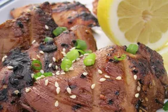

Grilled Teriyaki Chicken

Back To Home
Description
This recipe is a great way to look like an experienced grill master without much effort. Just throw the chicken in the marinade ahead of time and let the sauce and fire do the rest.
Ingredients
- 1 cup teriyaki sauce
- ¼ cup lemon juice
- 2 teaspoons minced fresh garlic
- 2 teaspoons sesame oil
- 4 skinless, boneless chicken breast halves
Direction
- Whisk teriyaki sauce, lemon juice, garlic, and sesame oil together in a bowl and pour into a resealable plastic bag. Add chicken, coat with marinade, squeeze out excess air, and seal the bag. Marinate in the refrigerator for at least 1 hour to overnight, turning every so often.
- When ready to cook, preheat an outdoor grill for high heat and lightly oil the grate.
- Remove chicken from marinade and shake off excess. Discard remaining marinade.
- Cook chicken on the preheated grill until no longer pink in the center and the juices run clear, 6 to 8 minutes per side. An instant-read thermometer inserted into the center should read at least 165 degrees F (74 degrees C).